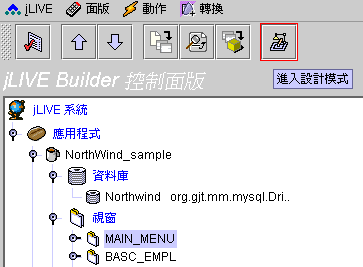
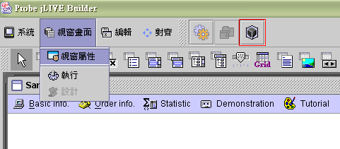
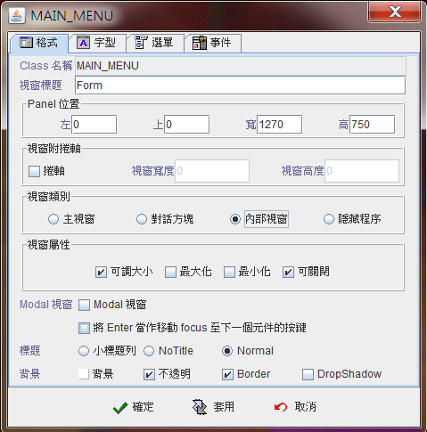
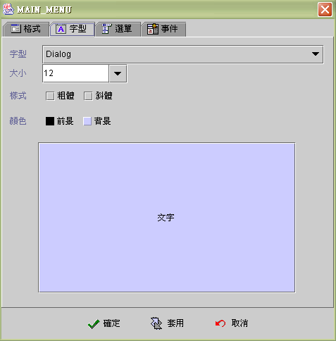
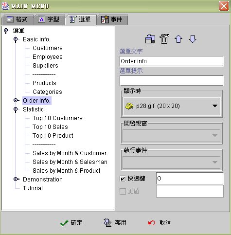
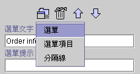
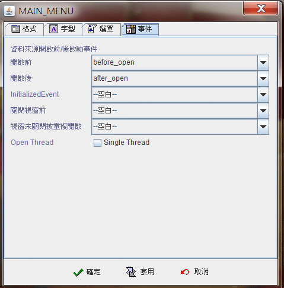

|

6.2
視窗屬性 (form properties)
視窗屬性 (form properties)
建立選單 (create menu bar)
視窗屬性 (form properties)
請先選擇視窗，然後按下 進入
( 進入設計模式 )
。

接下來可以由【視窗畫面】【視窗屬性】進入視窗屬性設定頁，或是按下功能鍵 設定
 ( 設定視窗屬性 )。 ( 設定視窗屬性 )。

視窗屬性設定可分為四大類：格式 (format)、字型
(font)、選單 (menu)、事件 (event)。
-
格式 (format)
-
Class 名稱 (class name)：目前正在設計的視窗的名稱，也是這個視窗 class 檔案的檔名。
-
視窗標題 (form title)：視窗的標題
(form title)，可以使用運算式 SetTitle("title") 動態變化。
-
Panel 位置 (panel position)：位置與視窗的類別有關，類別是主視窗
(main) 與內部視窗 (internal frame) 時，以 HTML 中 Applet
所在的區域左上角為原點。類別是對話方塊 (dialog)
時，以螢幕的左上角為原點。類別是隱藏程序 (process)
時，因為執行 (runtime) 時不顯現 (invisible)
所以無所謂位置以何為原點。執行期 (runtime)
，可以使用運算式 FormPos(left, top)及FormSize(width,
height) 動態改變視窗位置及大小。視窗開啟的位置，使用【視窗開啟】事件
，視窗顯示於屬性設定的位置；使用運算式 OpenForm("formname",
"pos")，視窗可以開啟在相對於啟動事件的元件位置或螢幕中央。參閱
OpenForm 運算式。
-
左 (left)：由零開始。
-
上 (top)：由零開始。
-
寬 (width)：視窗寬度。
-
高 (height)：視窗高度。
-
視窗附捲軸 (frame with scrollbar)：當視窗中所需佈建
(layout) 的元件超過工作區域時，可選擇以較小的視窗 (panel)
附捲軸 (scroll
bar)呈現。Panel 位置所設定的尺寸為設計的大小範圍，而視窗寬度與視窗高度所設定的大小是執行時實際呈現的視窗尺寸。由於
Java™ applet 不是一個 Container 所以類別為主視窗 (main) 的視窗，視窗附捲軸不能使用，必須按
applet 大小呈現而由瀏覽器提供捲軸
(scroll Bar) 功能。
-
視窗類別 (frame type)：
-
主視窗 (main)：以瀏覽器
(browser) 執行的應用程式，此類別的視窗將貼嵌於瀏
覽器 (browser) 頁面中；以獨立執行(stand alone)
的應用程式執行時，將貼嵌於主視窗框架 (main frame)
中。選擇此類別後視窗的視窗標題、可調大小、最大化 、最小化、可關閉、 Modal 視窗等屬性將失效。通常在程式的第一個啟動畫面或各個主功能畫面使用。
-
對話方塊 (dialog) ：此類別的視窗，將會以獨立的視窗
(window) 呈現於瀏覽器 (browser)或主視窗框架 (main frame)
外，如果設定Modal 視窗屬性，則視窗顯示後，會暫時凍結使用者操作其他視窗，直到此視窗關閉，系統程序才會回到呼叫開啟此視窗的作業程序。
-
內部視窗 (internal frame)：將此視窗以所謂的
MDI (Multi-Document Interface) 呈現，其可出現的範圍會侷限於瀏覽器
(browser) 的 Applet 大小或主視窗框架 (main
frame) 的區域範圍中。所有內部視窗屬性的視窗，可以以滑鼠切換為作業視窗
(active window)，內部視窗屬性的視窗會互相覆蓋，但不影響其運作。
-
隱藏程序 (process) ：開啟此類別的視窗時，主要是運用其視窗內部的作業程序
(process)
，並不需要使用者參與運作，所以開啟後並不出現視窗，而是循著系統程序執行：開啟資料來源前事件
(before data source open event) 、開啟資料來源 (open data source)、開啟資料來源後事件
(after data source event)、關閉視窗前事件 (before close event)
，之後這個不可視 (invisible) 的視窗隨即結束，系統程序回到呼叫開啟此視窗的作業程序。
-
視窗屬性 (frame properties)：
-
可調大小 (resizable)：
允許使用者拖拉視窗大小。反之則否。
-
最大化 (maximize)：視窗開啟時最大化。
-
最小化 (iconify) ：視窗開啟時縮小為圖示
(icon)。
-
可關閉 (closable)：視窗右上方，顯示關閉視窗的按鈕。
-
Modal 視窗 (modal frame)：當這個屬性的視窗顯示後，會暫時凍結使用者操作其他視窗，直到此視窗關閉，系統程序才會回到呼叫開啟此視窗的作業程序。具有
Modal 屬性的對話方塊
(dialog) 類別視窗，會暫停使用者對其他視窗的所有的操作行為，直到這個視窗結束；具有
Modal 屬性的內部視窗
(internal frame) 類別視窗，會維持此視窗出現在所有內部視窗的最上方，但允許使用者操作其他視窗。不具有此屬性的視窗，當被開啟後，系統程序隨即返回呼叫開啟此視窗的程序。
-
背景 (background)：
-
背景 (background)：設定背景色。
-
不透明 (opaque)：背景不透明。


-
選單 (menu)：
-
選單文字 (menu text)：選單上所顯示的文字。
-
選單提示 (menu tips)：滑鼠移到選單上時，所顯示的提示文字。
-
顯示時圖示 (display icon)：選單文字前顯示的圖示。
-
開啟視窗 (invoke form)：當按下此選單項目(menu
item) 時，所要開啟的視窗。
-
執行事件 (execute event)：如果選單項目(menu
item) 所要執行的並不是開啟視窗，而是執行該視窗的事件。則先將開啟視窗
(invoke form) 的選項選擇該視窗名稱，在執行事件的選取方塊中將會列示所有已存在於該視窗的事件，選取欲執行的事件即可。
-
快速鍵 (mnemonic)：( ALT +
key )
，上層的選單 (menu bar) 使用。
-
鍵值 (key stroke)：( ALT +
key )
，內層的選單項目 (menu
item) 使用。

-
選單類型 (menu type)：
-
選單 (menu)：增加子目錄選單
(sub menu) ，是樹狀結構，用於選單分類。
-
選單項目 (menu item)：
為目錄最後一層的子節點，用於啟動事件或開啟視窗。
-
分隔線 (separator)：
分隔不同類型的選單文字。
-
刪除 (delete)：將標示的選單、選單項目或分隔線刪除。
-
上移 (move up)：向上移動標示的選單項目。變換選單的排列順序。
-
下移 (move down)：向下移動標示的選單項目。變換選單的排列順序。

-
事件 (event)：
-
開啟前 (before data source open)：在資料來源開啟之前執行事件。
-
開啟後 (after data source open)：在資料來源開啟之後執行事件。
-
關閉視窗前 (final)：在視窗關閉之前執行事件。
-
視窗未關閉被重複開啟 (existed
and reopen)：視窗未關閉被重複開啟時，開啟前後事件
(Before and after data source open)
不會再次執行，系統將會在每次被重複呼叫開啟時，執行【視窗未關閉被重複開啟】事件。

建立選單 (create menu bar)
開始建立選單時，先按 建立選單
 ，輸入選單文字，選單下方可以建立選單項目
(menu item)，而選單 (menu)
本身不可以開啟視窗或執行事件，選單用於選單項目的分類。 ，輸入選單文字，選單下方可以建立選單項目
(menu item)，而選單 (menu)
本身不可以開啟視窗或執行事件，選單用於選單項目的分類。
建立選單時，請先以滑鼠按選標示
(mark) 選單，再按新增按鍵。在選單下，可以新增選單 (menu)、選單項目
(menu item) 及分隔線 (separator)；而在選單項目及分隔線之下，不可再新增任何選單。
如果要建立和選單同一層的選單時，
請以滑鼠按選標示 (mark)
上層選單，再按新增按鍵，即可新增一個同一階層的選單；例如：標示選單後，新增
Demonstration 選單。如果要在選單下建立可以開啟視窗的選單項目時，先標示該選單後，在新增按鍵的選項中選擇選單項目。當然也可以新增選單下的選單，請標示該選單再按新增按鍵，選擇選單即可。
▲Top
Copyright © 2001~
2004 Probe Technology . All Rights Reserved.
Questions, comments,
and suggestions to Service@probe.com.tw
|